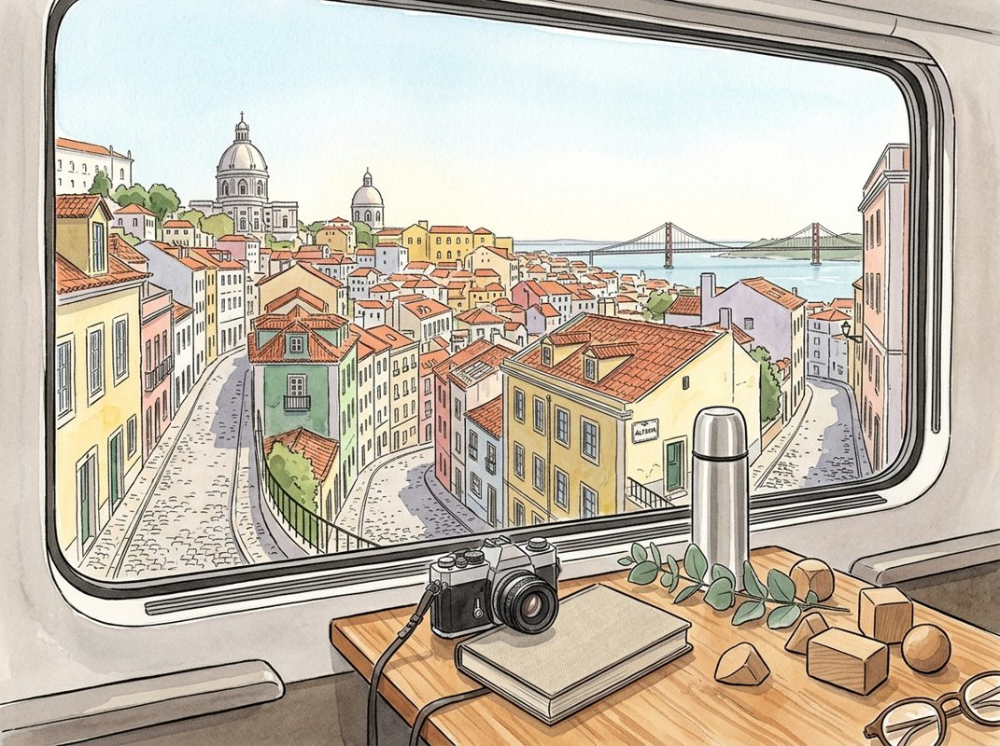

8/24

今日更新
#430 How to Write Ads That Sell
来源：Founders
原链接：
状态：已读完整音频 transcript
这期播客深入探讨了广告界传奇人物克劳德·霍普金斯（Claude Hopkins）的成功秘诀，不仅揭示了其开创性的“科学广告”理念，更强调了其超凡的职业道德和将工作视为乐趣的人生哲学。它适合所有希望通过极致投入和智慧洞察在商业、营销或任何领域取得卓越成就的创业者、营销人员和职场人士。
- 广告界的秘密武器与延迟出版的传奇：克劳德·霍普金斯，被广告巨人大卫·奥格威（David Ogilvy）奉为圭臬的传奇人物，著有《科学广告》（Scientific Advertising）和《我的广告生涯》（My Life in Advertising）。《科学广告》被誉为广告史上最重要的书籍之一，全球销量高达800万至1000万册。然而，其出版历程曲折。霍普金斯完成手稿时，雇主阿尔伯特·拉斯克（Albert Lasker）为保护公司秘密，竟将手稿锁入保险柜长达20年。直到拉斯克功成身退，霍普金斯才得以出版此书，使其智慧流传百世，深刻影响了后来的广告实践。这段历史不仅彰显了霍普金斯理论的颠覆性，也反映了其思想的巨大商业价值。
- 超越天赋的“超凡工时”：霍普金斯的成功并非源于天资过人，而是他所称的“超凡工时”。他自9岁起每天工作16小时，进入广告业后数十年如一日。他常工作到凌晨两点，将周日视为最佳工作日。霍普金斯坚信，比同行多付出两倍时间，就能取得两倍成就。智力差异不及勤奋影响深远。多做两三倍工作，意味着犯更多错误，也取得更多成功，并从中学习。播客主持人为整理霍普金斯笔记也花费10小时，践行了这种极致投入。这种对工作时间的极致投入，是霍普金斯在广告界登峰造极的关键。
- 经验的学校：贫困与实战智慧：霍普金斯出身贫寒，未能进入大学，却将此视为在“经验的学校”学习。他从一位铁路工头那里学到宝贵哲理：充分利用每一小时，并将工作视为乐趣。工头与得过且过的同事形成鲜明对比，他利用晚上时间建造房屋、耕耘花园，最终过上幸福生活。霍普金斯从工头身上领悟到，工作与玩乐界限模糊，关键在于心态。贫困经历迫使他更早接触社会，磨砺出实战智慧，塑造了他将勤奋与乐趣结合的独特职业观。
- 将工作视为游戏：态度的力量：“将工作视为游戏”是霍普金斯反复强调的核心理念之一，贯穿于他相隔三四十年的两部著作中。他从铁路工头那里学到，那些将工作视为苦役的人，只做最低限度的事情，而工头却能将工作变成一场竞赛，努力超越自我。工头在下班后继续建造自己的家园，享受创造的乐趣，而他的工友们则在闲聊中虚度光阴。工头反问：“什么是工作，什么是玩乐？两者一样辛苦，也都可以成为游戏。”霍普金斯深受启发，学会像爱高尔夫一样热爱工作，甚至为工作推掉社交。这种心态转变，让他能在高强度工作中保持热情，取得非凡成就。信息论创始人克劳德·香农（Claude Shannon）也有类似观点：“我们做得最好的，是我们最喜欢的。”
- 提炼核心信息：广告文案的精髓：播客主持人分享了他重读《科学广告》的个人目的：为了提升自己提炼核心信息的能力，尤其是在为新播客节目剪辑的短片撰写标题时。他需要将三四分钟的对话精华浓缩成一句精炼的标题，以最大化其吸引力。这正是霍普金斯“科学广告”理念在现代内容创作中的应用。霍普金斯在广告文案创作上的精髓在于，他能够将产品的最重要卖点，以最直接、最吸引人的方式呈现给受众。他强调广告应像推销员一样，直接向消费者“推销”产品，而非仅仅是品牌宣传。这种对信息提炼和有效沟通的执着，是霍普金斯广告成功的基石，也为当今的信息爆炸时代提供了宝贵的启示。
Sam Altman on Building OpenAI & Betting on the Impossible
来源：David-Senra
原链接：https://www.davidsenra.com/episode/sam-altman
状态：已读网页 transcript
这期播客深入探讨了Sam Altman创立OpenAI的非凡历程、其对AI未来发展的深刻洞察，以及如何应对技术、社会和伦理挑战，适合所有对AI前沿、创业哲学和未来社会形态感兴趣的读者。
- 非共识的起点：从AI痴迷到OpenAI的诞生：Sam Altman从小在圣路易斯就对人工智能充满好奇，大学期间也深入研究。他职业生涯的交叉点始终是创业、投资和AI。在投资初创公司的经历中，他学会了识别幂律效应、支持非传统人才，并认识到那些能改变公司轨迹的关键决策。正是基于这些洞察，以及他坚信最重要的机会往往源于非共识的押注，Altman于2015年联合创立了OpenAI。他认为，Y Combinator的创业哲学深刻影响了OpenAI的运营理念，包括敢于下非共识赌注、让技术人员主导、尽早发布产品、从现实中学习并快速迭代。这种对非共识和技术驱动的信念，为OpenAI的独特发展奠定了基础。
- 重塑创业范式：OpenAI的独特成长之路：尽管深受Y Combinator哲学影响，OpenAI的创建却不得不打破经典的创业剧本。Altman指出，OpenAI在长达四年半的时间里没有推出任何产品，这与传统初创公司“尽早发布”的原则背道而驰。在没有客户反馈的情况下，他们必须发明一套全新的方法来衡量研究进展。公司成立之初，大约十几个人聚集在Greg Brockman的公寓里，却发现对下一步该做什么一无所知。Altman将这段早期经历形容为“混乱的摸索”，正是这种持续的、看似无序的探索，最终才找到了通向GPT系列模型的研究路径。这表明，对于颠覆性科学发现而言，传统的商业逻辑可能并不适用，需要极大的耐心和对未知领域的探索精神。
- 史上最昂贵的基础设施：算力与规模化挑战：Altman强调，在OpenAI，他大部分精力都投入到研究和算力（compute）的建设上。他将算力规模化描述为“历史上可能最昂贵的基础设施项目”。这不仅仅是购买服务器那么简单，它需要极其复杂的协调工作，包括芯片设计与制造、晶圆厂的建设、全球数据中心的部署、电力系统的保障、巨额的资金投入、政策法规的制定、复杂的供应链管理以及精密的物流安排。这项任务的难度和成本是前所未有的，它要求OpenAI不仅是AI研究机构，更要成为一个能够整合全球顶尖资源、协调多方利益的巨型工程组织。Altman的关注点揭示了AI发展背后，对物理世界资源和基础设施的巨大需求。
- 平台化战略与资源聚焦：舍弃“好主意”的智慧：OpenAI的核心战略是作为一个平台运作：提供一个强大的AI直接交互界面，以及一个应用程序编程接口（API），让开发者能够在其基础上构建各种应用。Altman认为，这种平台策略要求公司必须具备“杀死好主意”的勇气，以便将有限的资源集中投入到那些真正“伟大”的想法上。在资源有限的情况下，即使是看起来不错的项目，如果不能与核心平台战略高度契合，也必须被放弃。这种高度聚焦的策略，旨在确保OpenAI能够持续在AI能力的核心领域取得突破，避免资源分散，从而最大化其影响力。这体现了在高速发展领域中，战略选择和资源配置的极端重要性。
- AI的社会冲击与伦理考量：赋能个体而非集中权力：Altman预测，AI能力的发展速度将远超社会和经济的吸收能力。人类的习惯和制度惯性可能会减缓这种转变，他认为这反而可能使过渡更为平稳。他最核心的担忧是，AI应该扩展人类的能动性（human agency），而不是将权力集中在少数公司、个人或模型手中。他指出了AI面临的两个最大风险：一是失去控制，二是权力过度集中。为了应对这些风险，OpenAI推崇“迭代部署”策略，即逐步推出AI产品，从现实世界中学习并不断改进安全措施。这反映了Altman对AI技术潜在负面影响的深刻认识，以及他致力于通过负责任的方式引导AI发展的决心。
历史精选
NVIDIA CEO Jensen Huang
来源：Acquired
原链接：https://www.acquired.fm/episodes/jensen-huang
状态：已读网页 transcript
这期播客深入探讨了英伟达（NVIDIA）及其创始人兼CEO黄仁勋（Jensen Huang）如何通过一系列大胆的战略决策、对技术趋势的深刻洞察以及独特的公司文化，从濒临破产的图形芯片公司成长为AI时代的万亿市值巨头。它适合所有对科技公司成长史、AI未来、以及创业者和领导者如何做出关键决策感兴趣的中文读者。
- NVIDIA的“背水一战”与RIVA 128的诞生：1997年，NVIDIA在资金和希望都所剩无几的情况下，面临着公司架构与微软DirectX不兼容的巨大危机。黄仁勋带领团队做出了一个惊人的决定：放弃物理原型，完全依赖模拟测试，并用公司所有剩余资金直接投入RIVA 128芯片的生产。尽管芯片只支持DirectX 32种混合模式中的8种，但他们通过极致的性能和对“发烧友”市场的精准定位，成功扭转了局面。这次经历塑造了NVIDIA“一次成功，直接量产”的理念，即通过预先模拟和测试所有风险，确保“完美芯片”的诞生，从而在关键时刻全力以赴。
- 从图形到通用计算：CUDA的远见：在RIVA 128之后，NVIDIA开始探索如何将GPU用于通用计算。早在CUDA之前，他们就已尝试构建抽象层，让GPU能处理CT重建、图像处理等任务。黄仁勋观察到可编程着色器本质上是高度并行、大规模线程的处理器，预示着通用计算的巨大潜力。尽管当时机器学习市场尚未成熟，NVIDIA仍投入了大量资源开发CUDA平台。这种“预取未来”的策略，即提前模拟和布局未来可能出现的技术需求，是NVIDIA成功的关键之一，为后续AI时代的爆发奠定了基础。
- 深度学习的“奇点”与NVIDIA的AI布局：2012年AlexNet在ImageNet竞赛中的突破，让黄仁勋意识到深度学习可能是一个“通用函数逼近器”，能够解决大量无需因果关系、只需预测性的问题。他迅速带领NVIDIA回归第一性原理，深入研究其可扩展性，并预见到它将重塑几乎所有软件和计算方式。NVIDIA积极与全球AI研究人员（如Yann LeCun、Andrew Ng、Jeff Hinton、Ilya Sutskever）合作，提供计算系统和软件栈支持，甚至亲自将第一台DGX服务器交付给OpenAI。这种对研究社区的早期投入和信念，是NVIDIA在AI浪潮中占据主导地位的重要原因。
- 数据中心：从云游戏到AI基础设施的演进：NVIDIA进军数据中心的旅程始于17年前，源于黄仁勋对“计算与显示分离”的洞察。他认为，如果NVIDIA的计算能力不再受限于桌面PC，市场机会将呈爆炸式增长。最初，这体现在GeForce NOW（云游戏）和企业远程图形产品上。这些早期的数据中心产品，虽然市场规模不如AI，却让NVIDIA积累了构建和运营数据中心计算的宝贵经验。正是这些前瞻性的布局，使得NVIDIA在AI时代来临时，能够迅速抓住机遇，成为AI基础设施的核心提供商，印证了“站在机会之树旁，等待苹果落下”的战略智慧。
- Mellanox收购案：网络即计算机：NVIDIA在2019年以69亿美元收购Mellanox，这一举动在当时令许多人感到意外，但黄仁勋认为这是NVIDIA成为未来数据中心计算公司的关键一步。他洞察到，数据中心的核心并非处理器本身，而是其网络基础设施。对于AI这种需要将一个训练任务分布到数百万个处理器上的分布式计算模式，传统的以太网无法满足需求，而Mellanox的高性能InfiniBand网络正是理想选择。这次收购被认为是科技史上最成功的战略决策之一，因为它将NVIDIA从单纯的GPU供应商转变为提供完整AI计算堆栈的解决方案提供商。
Vulcan Materials: Rock On - [Business Breakdowns, REPLAY]
来源：Business Breakdowns
原链接：https://joincolossus.com/episodes/72933512/mcmahon-vulcan-materials-rock-on
状态：已读网页 transcript
这期播客深入剖析了美国最大的建筑骨料生产商Vulcan Materials，揭示了一个看似“无聊”却极其成功的传统行业巨头如何通过地理优势、物流优化、资本投入和精明定价，构建起深厚的经济护城河。它适合对基础设施、供应链管理、传统行业投资以及如何从简单业务中挖掘长期价值感兴趣的专业投资者和商业分析师。
- 骨骼与基石：Vulcan Materials与建筑骨料市场：Vulcan Materials是美国最大的建筑骨料（碎石、沙子、砾石）生产商，这些基础材料是美国所有建筑、道路和基础设施的“骨骼”。播客指出，尽管业务看似简单，但其产品是物理世界不可或缺的基石。公司通过开采、加工和运输这些原材料，支撑着美国经济的运转。Rob Hansen强调，理解Vulcan的成功，首先要认识到建筑骨料市场的本质：它是一个高度本地化、对物流依赖极强、且产品同质化程度高的行业。Vulcan的卓越之处在于，它能在这个看似低门槛的领域，建立起难以逾越的竞争优势。
- 地理优势与物流命脉：不可复制的护城河：Vulcan的核心竞争力之一是其无与伦比的地理分布和物流网络。骨料的价值密度低，运输成本在其总成本中占据巨大比重。因此，采石场（quarry）的位置至关重要，越靠近需求中心，竞争优势越大。Vulcan通过长期的战略布局和并购，在美国主要增长区域拥有大量优质采石场，形成了天然的“护城河”。播客强调，公司在铁路、水路和公路运输上的优化，使其能以最低成本将产品送达客户，这不仅降低了客户的采购成本，也提高了自身的市场份额和盈利能力。这种对物流的精细化管理，是其超越竞争对手的关键。
- 资本密集与运营精髓：效率与规模的平衡：建筑骨料行业是一个典型的资本密集型行业，建立和运营采石场需要巨额的前期投资，包括土地、重型机械和环保设施。Vulcan通过垂直整合，从采矿到加工再到运输，全面掌控供应链，确保了运营效率和成本控制。播客提到，公司积极拥抱技术，例如利用数据分析优化生产流程、预测需求，以及通过数字化工具提升客户体验。这些技术应用并非颠覆性创新，而是对传统业务的精细化管理和效率提升，使其在规模经济的基础上，进一步巩固了市场领导地位。这种对资本投入和运营效率的平衡，是其长期成功的基石。
- 定价策略与市场动态：穿越周期的智慧：在骨料这种大宗商品市场，定价策略至关重要。Vulcan并非简单地随行就市，而是采取了更为精明的定价策略。播客分析，公司能够根据区域供需关系、运输成本和客户价值，进行差异化定价，从而最大化利润。尽管骨料需求与宏观经济周期（尤其是建筑业）紧密相关，但Vulcan通过其市场领导地位和对关键基础设施项目的参与，展现出一定的抗周期性。此外，公司通过战略性并购，不仅扩大了市场份额，更重要的是优化了物流网络，进一步提升了定价权和盈利能力，使其在市场波动中仍能保持稳健增长。
- 增长驱动与未来展望：基础设施的持久需求：Vulcan的盈利增长主要受骨料销量和平均售价的驱动。播客指出，尽管短期内可能受经济周期影响，但长期来看，美国对基础设施建设的持续需求是其业绩增长的强大支撑。无论是老旧基础设施的更新改造，还是新城市化进程中的扩张，都离不开大量的建筑骨料。特别是在商业建筑领域，随着经济发展和人口增长，对办公楼、零售空间和工业设施的需求将持续存在。Vulcan凭借其在主要增长市场的布局和强大的供应能力，有望持续受益于这一长期趋势，展现出稳定的盈利预期。